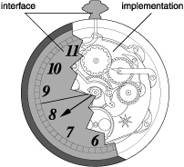

一、面向对象和封装
面向对象的三大特性：封装（成员变量）、继承和多态
在OC语言中，使用@interface和@implementation来处理类。

@interface就好像暴露在外面的时钟表面，像外界提供展示以及接口。
@implementation就好像隐藏在时钟内部的构造实现，把具体的实现封装了起来。
二、Set方法
在开发过程中，考虑到安全性要求，我们一般不在成员变量名前面使用@public、@protected等关键字修饰，而是使用Set方法来为对象提供成员变量的值。在set方法的内部也可以对一些不合理的赋值进行筛选过滤。
Set方法的作用：为外界提供一个设置成员变量值的方法
命名规范：
- 方法名必须以set开头
- Set后面跟上成员变量的名称，首字母大写
- 返回值一定是void
- 一定要接收一个参数，而且参数类型需要和成员变量的类型一致
- 形参名不能和成员变量名一样（苹果官方推荐成员变量名前加_以示区分）
Set方法的好处：
- 不让数据暴露在外，保证了数据的安全性
- 对设置的数据进行过滤
Set方法使用示例：
Set方法的声明：
@interface Person : NSObject
{
// 这里不再使用@public关键字
int _age;
}
//set方法的声明,接受一个参数
- (void)setAge:(int)age;
- (void)print;
@end
Set方法的实现：
@implementation Person
// set方法的实现
- (void)setAge:(int)age
{
_age = age;
}
- (void)print
{
NSLog(@"age = %d", _age);
}
@end
测试程序：
Person *person = [[Person alloc] init];
// 使用set方法设置Person类对象age变量的值为10
[person setAge:10];
[person print];
// 打印结果
2016-07-12 14:08:39.406 test[68504:10912801] age = 10
三、Get方法
Get方法的作用：为调用者返回对象内部的成员变量
命名规范：
- 一定有返回值，返回值的类型和成员变量的类型一致
- 方法名和成员变量名一样
- 不需要接收任何参数
Get方法使用示例：
Get方法的声明：
@interface Person : NSObject
{
NSString *_name;
}
- (void)setName:(NSString *)name;
- (NSString *)name;
@end
Get方法的实现：
@implementation Person
// set方法的实现
- (void)setName:(NSString *)name
{
_name = name;
}
- (NSString *)name
{
return _name;
}
@end
测试程序：
Person *person = [[Person alloc] init];
[person setName:@"xiaoming"];
NSLog(@"%@", person.name);
// 打印结果
2016-07-12 14:19:32.702 test[68694:10983407] xiaoming
注意1：在实际的开发中，不一定set和get方法都会提供，如果内部的成员变量比如学生的学号这样的数据只允许外界读取，但是不允许修改的情况，则通常只提供get方法而不提供set方法。 注意2：成员变量名的命名以下划线开头，get方法名不需要带下划线，使用下划线开头有两个好处：（1）与get方法的方法名区分开来；（2）可以和一些其他的局部变量区分开来，下划线开头的变量，通常都是类的成员变量。
四、Self关键字
Self是一个指针，谁调用了当前方法，self就指向谁
【出现在对象方法中，就代表着当前对象，出现在类方法中，就代表着当前类】
Self的用途:
- 可以利用self->成员变量名访问当前对象内部的成员变量（仅在对象方法中）
[self 方法名]；可以调用其他的对象方法或者是类方法。
五、练习
要求：设计一个成绩类
/*
设计一个成绩类,
这个成绩类有以下四个属性:
1. OC成绩(可读写)
2. C成绩(可读写)
3. 总分(只读)
4. 平均分(只读)
*/
@interface Score : NSObject
{
int _OCScore;
int _CScore;
int _sum;
int _average;
}
- (void)setOCScore:(int)ocScore;
- (int)ocScore;
- (void)setCScore:(int)ocScore;
- (int)cScore;
- (int)sum;
- (int)average;
@end
实现：
@implementation Score
- (void)setOCScore:(int)ocScore
{
_OCScore = ocScore;
_sum = _OCScore + _CScore;
_average = _sum * 0.5;
}
- (int)ocScore
{
return _OCScore;
}
- (void)setCScore:(int)ocScore
{
_CScore = ocScore;
_sum = _OCScore + _CScore;
_average = _sum * 0.5;
}
- (int)cScore
{
return _CScore;
}
- (int)sum
{
return _sum;
}
- (double)average
{
return _average;
}
@end
测试程序：
NSLog(@"sum = %d", [s sum]);
NSLog(@"average = %.2f", [s average]);
[s setCScore:100];
NSLog(@"sum = %d", [s sum]);
NSLog(@"average = %.2f", [s average]);
// 打印结果
2016-07-12 14:42:08.041 test[69041:11083543] sum = 178
2016-07-12 14:42:08.041 test[69041:11083543] average = 89.00
2016-07-12 14:42:08.041 test[69041:11083543] sum = 180
2016-07-12 14:42:08.041 test[69041:11083543] average = 90.00